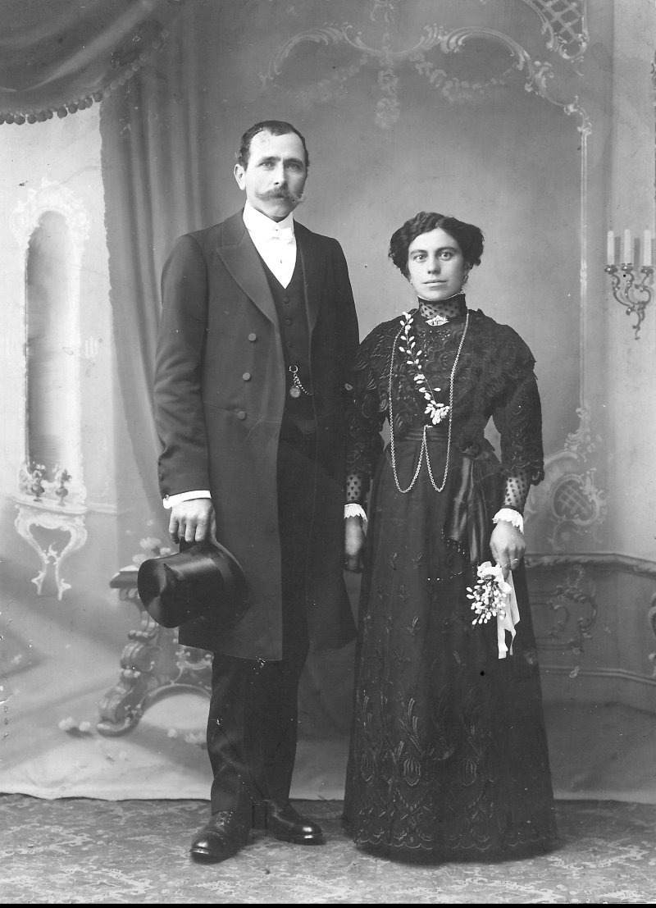
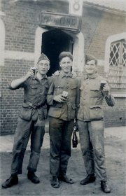

Het levensverhaal van Hector
Winnock, zoals bewaard in het familiegeheugen ...
En twee wereldoorlogen.
Hector werd geboren in Proven op
5 december 1872 en is overleden in het Minnewater Ziekenhuis te Brugge op 24 juni 1940 
Op jonge leeftijd ging hij naar Rijsel (Lille | Frans-Vlaanderen | Frankrijk) om de stiel
van slachter/beenhouwer aan te leren.
Bij de loting wie - al dan niet
- legerdienst moest doen, werd hij eruit geloot. Maar hij heeft zich laten betalen om de
legerdienst in de plaats van de zoon van een notabele te doen.
Hector deed vier jaar legerdienst. Hij was tijdens zijn legerdienst, ordonnans bij een
generaal. Hector was een imposante verschijning. Groot van gestalte ten opzichte van zijn
tijdgenoten, sprak goed Frans, als beenhouwer had hij niet alleen geleerd om vlees te
bewerken maar ook allerhande charcuterie te bereiden en wist hij ook wat kuisen en
hygiënisch werken was. En als boerenzoon kende hij iets van dieren en paarden. Hector was
zeer geliefd als ordonnans door de generaal die hij diende en even zeer bij de vrouw van
de generaal.
Anekdote: Iedere keer als er een optocht was, moest hij de generaal te paard escorteren. Een dorpsgenoot van Hector vertelde dat Hector ook een hoge militair was. Dat hij als soldaatpiot met zijn groep telkens strak in het gelid stond en moest salueren voor de generaal maar evenzeer voor Hector die even statig voorbijreed op zijn paard.
Hector maakte tijdens zijn vier
jaren legerdienst ook de opkomst mee van de socialisten. En zong af en toe uit volle borst
het toen populaire lied: daarom zijn wij socialisten, ziet hier, ziet daar, al die
kapitalisten enz.
Na zijn legerdienst is Hector niet terug gaan beenhouwen maar werd conterboer op de
(grootste ?) hofstede van de baron van Proven. De toenmalige burgemeester van Proven (baron Raoul
Mazeman de Couthove) was een vrijzinnige antiklerikale liberaal. Ook Hector dacht
zoals de baron.
Hector is voor de eerste keer getrouwd in 1913 (begin november volgens De Poperinghenaar) - op 40 jarige ouderdom - met Celina Vandermarlière (°1886 - +1932), afkomstig uit een zeer katholieke familie van Poperinge.
De Eerste Wereldoorlog
Bij de
aanvang van de eerste wereldoorlog was Hector dus landbouwer op een hofstede van de baron
van Proven.
 Die hofstede lag in de frontlinie en werd gebruikt
door de Fransen en de Engelsen als vliegveld en verblijfplaats. Hector is niet gevlucht
maar bleef op zijn hofstede. Dat hij Frans sprak, kwam goed van pas. Dat hij wist hoe hij
moest omgaan met militairen van hoge rang, eveneens. Dat hij goed kon koken en vlees
bewerken en wist wat proper werken is, eveneens. Hector werd ook een zeer goede
bierbrouwer.
Die hofstede lag in de frontlinie en werd gebruikt
door de Fransen en de Engelsen als vliegveld en verblijfplaats. Hector is niet gevlucht
maar bleef op zijn hofstede. Dat hij Frans sprak, kwam goed van pas. Dat hij wist hoe hij
moest omgaan met militairen van hoge rang, eveneens. Dat hij goed kon koken en vlees
bewerken en wist wat proper werken is, eveneens. Hector werd ook een zeer goede
bierbrouwer.
Hector had onbeperkte toegang
tot de mess van de officieren, werd hun vertrouwensman, ging naar Frankrijk om de dieren
te kopen voor de keuken van de officieren, mocht de gewone soldaten bevelen geven wat en
hoe ze moesten koken voor de officieren, hoe ze het vlees moesten versnijden en
bereiden en hoe ze het bier moesten brouwen enz.
Hector leefde gedurende vier jaar tussen de militairen. Veel Engelse vliegeniers waren van
adel en rijke afkomst. Het bier en de eet- en drinkgelagen (de bacchanalen) van Hector waren gekend tot in Engeland
en Frankrijk. Zelfs enkele keren zouden de piloten van Engelse en Duitse adel met
elkander verbroederd hebben op het vliegveld op de hoeve van Hector, wat eindigde in
drank- en seksorgieën. De vraag of Hector ook naar Frankrijk mocht (of moest)
trekken om de meisjes van plezier te
rekruteren, is
onbeantwoord gebleven.
Anekdote: Een Engelse gevechtspiloot had een lederen riem rond zijn lichaam en in die riem waren er vele goudstukjes genaaid. Als die Engelsman een "feestje met alles erop en eraan" organiseerde, betaalde hij Hector met een goudstukje dat hij uit zijn riem sneed.
Hector sprak na de oorlog
vrij goed Engels en zelfs ook een beetje Duits.
Dit verhaal zoals het ons werd verteld, is wat gelijklopend met hetgeen we kunnen lezen in de extra bijlage februari 2015 van het Wekelijks
Nieuws, over de Groote Oorlog onder de titel "Poperinge en omgeving: niet bezet maar
ingepalmd" (auteur: Tom Gheeraert) en in het boek (uitgegeven bij het
Davidsfonds) "Lief en Leed. Prostitutie in de Groote Oorlog".
Ook het boek:
Flirten met Mars en Venus, Oorlog en prostitutie, 1914-1918.
Periode 1918 - 1920
Na de oorlog vroeg de baron - die eigenaar was van verschillende hofsteden - dat Hector daar zeker zou blijven om alles terug op te ruimen - zoals de vele obussen op het land, de barakken, de verharde landingsbaan van het vliegveld etc. - zodat de hofstede terug geschikt zou worden voor de landbouw en dat hij gedurende jaren geen pacht zou moeten betalen want dat de baron zou kunnen regelen om oorlogsschade uitbetaald te krijgen.
Periode 1920 - 1940
Hector besloot echter om de hoeve in Proven te verlaten want had blijkbaar genoeg spaarcenten om - in het jaar 1920 - een eigen hofstede van 10 hectaren gelegen Fortem-Alveringem, te kopen.
 Hector en Celina hadden twee
kinderen: Albert (°13/10/1914 - +20/09/1985) en Bertha (°17/12/1917 - +25/06/2012).
Hector en Celina hadden twee
kinderen: Albert (°13/10/1914 - +20/09/1985) en Bertha (°17/12/1917 - +25/06/2012).
Bij Hector en Celina, op de hoeve in Fortem, woonde ook de broer van Hector mee: Pieter Hendrik Winnock (°1865 - +1948) maar hij werd door iedereen Henri genoemd ("nonkeltje Henri").
Henri is nooit gehuwd geweest en
was een zeer zachtaardig man (het profiel van een homo ?).
Henri was ooit jachtwachter geweest en was bezeten door de jacht en wapens (zoals Hector
eveneens). Kende eveneens alles van de natuur en het gezang van iedere vogel kon hij
herkennen. En de sterrenhemel kende voor hem ook geen geheimen.
Henri las ook zeer veel boeken 's avonds bij het open haardvuur of de Leuvense stoof. Zoals de
boeken van Hendrik Conscience, Jules Verne, Robert en Bertrand - de lustige vagebonden
(roman door Koen Ravestein met platen van William Bataille), Tijl Uilenspiegel enz.
Nonkeltje Henri was ook bijgelovig en kende veel volksverhalen over spoken en heksen en
kwabettes.
Anekdote: Toen Pieter-Henri tezamen met Hector op de hoeve in
Fortem woonde, behielden ze het jachtrecht op hun gronden, zeer tot ongenoegen van de
rijke heren die daar niet mochten komen jagen.
Het verhaal gaat dat Henri eens een haas zou geschoten hebben op "de grens" van
zijn jachtgebied met dat van de concurrentie en hij werd voor het gerecht gedaagd. Wat tot
zeer zware straffen had kunnen leiden maar gelukkig was er een familielid griffier bij de
rechtbank van Veurne en de rijke heren jagers vielen bijna van hun stoel toen de rechter
niet voor hen partij koos ...
De echtgenote van Hector, Celina, had verschillende opstoten doorgemaakt van acuut gewrichtsreuma. Een ziekte die anno 2015 nog weinig voorkomt, mogelijk door de opkomst van de penicilline mogelijk ook door een mutatie van de pathogene streptokok. Maar in die jaren was acuut gewrichtsreuma een gevreesde ziekte vooral omdat er hierdoor ook restletsels optraden ter hoogte van de hartkleppen. Wat bij Celina het geval was. Door de stenose en het lekken van de hartkleppen wordt de pompfunctie van het hart steeds moeilijker. Uiteindelijk is Celina in 1932 op 45-jarige leeftijd gestorven ten gevolge van longoedeem door chronisch hartfalen. De huisarts dr. Van Haute kwam tweemaal per dag aan huis en de stervensbegeleiding was dus goed want dokter Van Haute was gekend als een zeer zalvende dokter maar een grote twijfelaar. Of moeten we schrijven, een eerlijke dokter want in die tijd hadden de dokters weinig behandelingsmogelijkheden.
 Na het overlijden van
Celina, moest Bertha thuis blijven van school en mocht niet verder gaan naar het
pensionaat van Poperinge. Bertha was nochtans een slim meisje en had ook muzikaal talent.
Een kaartje dat Bertha schreef naar haar broer Albert in het college van Poperinge,
illustreert dat. Als 10-jarige in 1927 een dergelijke tekst kunnen schrijven, wijst er
toch op dat het onderwijs in de meisjesschool van Alveringem, goed was.
Na het overlijden van
Celina, moest Bertha thuis blijven van school en mocht niet verder gaan naar het
pensionaat van Poperinge. Bertha was nochtans een slim meisje en had ook muzikaal talent.
Een kaartje dat Bertha schreef naar haar broer Albert in het college van Poperinge,
illustreert dat. Als 10-jarige in 1927 een dergelijke tekst kunnen schrijven, wijst er
toch op dat het onderwijs in de meisjesschool van Alveringem, goed was.
Als 15-jarig meisje had Bertha dus geen moeder meer en moest ze het huishouden beredderen
tezamen met nonkeltje Henri.
Anekdote: Hector kon een tweede aanpalende hoeve kopen
(aankoop hofstede Ch-L Provoost - 9 hectaren - op 19/02/1934 - openbare verkoping).
Die hoevelanderijen grensden aan de hoeve van Tanghe. Aan de ingang van de oprit van die
hofstede van Tanghe stond een kapelletje. Dat kapelletje was erg vervallen.
Mensen uit de buurt kwamen melk halen op de hoeve van Hector. Op een dag vertelde Hector aan Zulma, de grootste commère van het dorp, dat hij had horen vertellen dat onze Lieve Vrouwe reeds verschillende malen, in een lichtflits was verschenen in het kapelletje van Tanghe en dat ze had gepreveld en herhaaldelijk gezucht: "ik wil herbouwd worden". Maar dat Zulma dat aan niemand mocht verder vertellen. Een paar weken later deed het verhaal volop de ronde op het dorp.
In die tijd kwamen de boeren nog een babbeltje doen met mekaar op het veld. Zo kwam René op een dag zeggen aan Hector dat er op het dorp werd verteld dat er een verschijning was geweest in zijn kapelletje en dat hij niet anders zou kunnen dan het te herbouwen. Het kapelletje staat er vandaag nog altijd, te bewonderen op de weg van Fortem naar Eggewaartskapelle.
 Hector is in 1937 hertrouwd met Eugenie.
Hector is in 1937 hertrouwd met Eugenie.
De twee ongehuwde kinderen en zijn broer vonden dat toch maar raar dat Hector hertrouwde
met Eugenie, die langs de Lovaart woonde op 100 meter van de hoeve en dat Hector daar 's
nachts ging slapen.
Het argument van Hector was dat hij hertrouwde met een rijke weduwe zonder kinderen. En
dat er een goed huwelijkscontract was en dat hij zeker langer zou leven dan zij. Hij had
niet voorzien dat hij in de oorlog plots aan zijn einde zou komen en dat Eugenie dan een
deel van zijn eigendom zou krijgen. Wat het geval is geweest maar Eugenie heeft haar deel
nooit gevraagd en heeft de twee kinderen van Hector zeer fair behandeld. Eugenie had wel
iets weg van een goedaardige heks, kende zeer veel kruiden, brouwde haar eigen alcohol en
kon goed koken. Haar recept om een stoofpotje met haas klaar te maken met patersbier,
zoetekoek, ajuin, spek - blijft 1 van de familiegeheimen.
Anekdote: Jaren later toen we Bertha wilden plagen, vroegen we haar of Hector met Eugenie was getrouwd voor de seks of voor haar centen. Maar dat is kwaadsprekerij. Hector voelde zich allicht nog vitaal genoeg om een nieuwe levensgezellin te willen.
Bertha trouwde in 1938, op 21-jarige leeftijd, met Marcel Zoete. De ouders van Marcel wilden absoluut stoppen met boeren en Marcel moest hun hofstede, gelegen in het dorp van Alveringem naast de gemeenteschool, overnemen.

Mei 1940. Marcel was reeds verschillende maanden gemobiliseerd als sergeant bij de transmissietroepen, tegen de Duitse grens in Veldwezelt en werd krijgsgevangen genomen, een paar dagen na het uitbreken van de oorlog.Jarenlang heeft hij nachtmerries en angstaanvallen aan die krijgsgevangenschap overgehouden. Toen hij gevangen werd genomen, woog hij 90 kg. Toen hij werd vrij gelaten nog 45 kg als gevolg van de ontbering. Veel van zijn kampgenoten waren gestorven.
Ook kwam er ieder jaar hem
een lotgenoot uit Zonnebeke bezoeken waarvan hij het leven had gered. Die kampgenoot was
op een bepaald ogenblik zodanig ziek als gevolg van diarree (paratyfus ?) dat hij niet
meer op zijn benen kon staan. Dagelijks was er tweemaal appèl. Wie niet
aanwezig was op het appell wegens te ziek, werd afgevoerd en kwam nooit meer terug.
Gedurende twee dagen heeft Marcel het gewaagd om van rij te verspringen en ook aanwezig te
roepen in naam van de afwezige.
Ook de zoon van Hector, Albert, was gemobiliseerd maar zijn legereenheid heeft zich
teruggetrokken en hij werd niet krijgsgevangen genomen. Enkele dagen na de capitulatie van
België door de Koning en zijn troepen (op 28 mei 1940), was hij terug thuis.
Bertha (had toen een zoontje van een half jaar oud) moest alleen de hofstede beredderen, tezamen met de gepensioneerde schoonouders die een huis naast de hoeve in de Nieuwstraat hadden gebouwd.
De Tweede Wereldoorlog
10 mei 1940
De tiende mei 1940 om 5 uur ging Bertha van het woonhuis naar de koestal om de koeien te melken. Plots hoorde ze een raar geluid van vliegtuigen in de lucht en werd ze getroffen in haar rechter been door schrapnels van een dumdum kogel die rakelings langs haar oor voorbijvloog en uiteen spatte op de stenen. Blijkbaar was er die bewuste ochtend boven Alveringem, reeds een Duits verkenningsvliegtuig in een gevecht verwikkeld met een Belgisch legervliegtuig.

 Volgens het officiële verslag werd Bertha dus
getroffen door "neerstortende scherven van luchtafweergranaten" in het rechter
onderbeen en voet.
Volgens het officiële verslag werd Bertha dus
getroffen door "neerstortende scherven van luchtafweergranaten" in het rechter
onderbeen en voet.
Hector had een eigen auto en de dorpsdokter regelde om Bertha naar het ziekenhuis Maria's
Rustoord van Roeselare te laten voeren. Onderweg kwamen de mensen allemaal de straat op
met het grote nieuws dat de oorlog was uitgebroken. Hector kon dat bevestigen en had zelfs
één van de eerste burgeroorlogslachtoffers aan boord. In het ziekenhuis van Roeselare
was de chirurg dr. Demeulenare nog niet gevlucht en heeft onmiddellijk die beenwonde
geopereerd en gedebrideerd. Na 5 dagen was Bertha terug, in herstel op de ouderlijke
hofstede in Fortem.
Die meidagen van 1940 deden Hector terugdenken aan de oorlog 14-18 toen hij zovele Franse en Engelse militairen zo goed had gekend. En niettegenstaande dat Henri en Bertha aan Hector zegden dat hij binnen moest blijven, wilde Hector niet luisteren en wilde hij de aftocht van de Engelsen en de aankomst van de Duitsers van dichtbij meemaken.
En hij kon het niet laten om
met de Engelse soldaten die op de vlucht waren, een babbeltje te gaan doen. Maar
het bekwam hem slecht. Die Engelse soldaten waren geen hoge officieren zoals
tijdens de eerste wereldoorlog op zijn hoeve in Proven. Veel van
die Engelse soldaten op de vlucht, waren dronken en zagen er met
bloeddoorlopen ogen en ongewassen en ongeschoren, verwilderd uit. Er heerste totale chaos. Op hun legercamions lagen goederen
en drank die ze gestolen hadden uit de leegstaande huizen in het binnenland van burgers
die gevlucht waren. Die Engelse soldaten hadden werkelijk van alles gestolen: sterke
drank, flessen dure wijn, tafellinnen, tafelserviezen, zilveren bestekken, antieke meubels
enz. Het was een haveloos, totaal onvoorbereid Engels leger dat beter niet "ter
hulp" was gekomen van België. Die Engelse soldaten hebben de Belgen toen niet
geholpen, integendeel nog veel bijkomende ellende aangericht waardoor ook meer
burgerslachtoffers in de Westhoek (onder andere tijdens de operatie Dynamo).
Anekdote: Hector wil een babbeltje slaan met een Engelse soldaat op de vlucht maar
het bekwam hem slecht: die soldaat trok zijn pistool en richtte zijn pistool op Hector met
de woorden: Fuck you Belge of zoiets.
29 mei 1940
Maar blijkbaar was Hector nog
niet geleerd. Toen het Duitse leger op komst was, was hij opnieuw niet binnen te houden.
Zijn landbouwalaam was opgeëist en werd door de Franse soldaten op en rond de brug over
de Lovaart te Fortem geplaatst. Zogezegd om de opmars van het Duitse leger te vertragen. De hofstede van Hector lag op een
100-tal meter van de Fortembrug en
Hector zei dat hij eens ging kijken naar zijn landbouwalaam aan de Fortembrug.
 Bertha die in het binnenhuis zat met haar kind van zes maanden,
herstellende van haar beenwonde, zei maar allez, pa blijf nu toch binnen, het Duitse leger
is op komst. Maar Hector wilde die militairen en de intocht van het Duitse leger zien,
deed zijn klak op en weg was hij.
Bertha die in het binnenhuis zat met haar kind van zes maanden,
herstellende van haar beenwonde, zei maar allez, pa blijf nu toch binnen, het Duitse leger
is op komst. Maar Hector wilde die militairen en de intocht van het Duitse leger zien,
deed zijn klak op en weg was hij.
Een half uur later, groot lawaai, schieten en een grote ontploffing. De brug van Fortem werd de lucht ingeblazen. En Hector kwam niet naar huis. Zijn broer ging hem zoeken en Hector lag gekwetst in de weide, tussen de brug van Fortem en zijn woonhuis. In zijn linker onderbeen was al het vlees van de kuitspier weg en een stuk bot lag bloot. Hector was goed bij bewustzijn en werd op een kruiwagen naar huis gevoerd.
Hector vertelde dat hij naar de
brug ging en dat er twee Franse soldaten uit zijn mikke, gelegen in de weide, kwamen. Ze
kwamen naar Hector en vroegen hem of hij wist hoe de situatie was en waar het oprukkende
Duitse leger zich bevond. Hector had geantwoord dat hij van Engelse soldaten, die op de
vlucht waren, had horen zeggen dat het Duitse leger reeds in Diksmuide was en een
pontonbrug over de Ijzer had aangelegd.
"Dan doen we de Fortembrug in de lucht vliegen", hadden die militairen
gezegd en waren het op een lopen gezet, richting brug, die gedynamiteerd was. En effectief
kort daarna werd de brug de lucht ingeblazen.
Hoe Hector juist werd gekwetst, kon hij zich niet meer herinneren. Mogelijk door een stuk van de brug dat weggevlogen was. Maar blijkbaar niet. Waarschijnlijk zat er reeds een Duitse verkenner in een boom en heeft hij een handgranaat gegooid naar Hector, mogelijk omdat hij een gesprek met de Franse soldaten had gevoerd.
Hector lag zwaargekwetst in
zijn bed. De dorpsdokter kon niet komen want de brug over de Lovaart was weg. Een paar
uren later reed een Duitse militaire colonne voorbij. Dat de brug in Fortem was
opgeblazen, daar lachten de Duitsers eens mee.
Plots reden verschillende militaire voertuigen met Rood Kruis erop, de hofstede op. Het
was een van de momenten die Bertha nooit meer van gans haar leven, zou vergeten. Twee
grootse Duitse militairen stapten het woonhuis binnen. Bang werd er afgewacht wat er zou
gebeuren. Die militairen zegden dat ze legerchirurgen waren en dat de burgers geen enkele
vrees moesten hebben. Ze zegden dat ze hadden vernomen dat er een gewonde was en of ze
eens naar de wonde moesten kijken. Hector zei dat dit mocht. Ze keken naar die wonde en
zegden : "die unmensch - dat was toch niet nodig". Hun verdict was:
"aan die wonde kunnen we hier niet veel doen. Dat been moet onmiddellijk worden
afgezet. We hebben een hospitaal in Hondschote en indien u wilt, nemen we u mee daar
naartoe. Dit is de enige manier om uw leven te redden."
Eventjes heeft Hector getwijfeld maar zijn familie rondom hem vond dat verschrikkelijk. Uiteindelijk is Hector niet meegegaan met de Duitsers. De Duitse dokters hebben de verplegers het bevel gegeven om de wonde zo goed mogelijk te verbinden en hebben nog eens nadrukkelijk hun spijt uitgedrukt dat ze het leven van Hector niet konden redden maar toonden ook begrip dat de mensen moeilijk vertrouwen in hen konden hebben. De dokters schreven een schein uit zodat Hector naar Brugge kon worden vervoerd.
Er werd een boerenzoon - die op een paar kilometer van de hoeve van Hector woonde, langs de weg naar Eggewaartskapelle - bereid gevonden om Hector naar het Minnewaterziekenhuis van Brugge te voeren. Was niet zo evident want moest gebeuren doorheen een gebied volledig in chaos met een binnenrukkend Duits leger. De rit naar Brugge verliep vrij vlot en de Duitsers traden zeer correct op en salueerden telkens als ze de schein zagen, die door de Duitse legerdokters werd uitgeschreven.
Niettegenstaande de Koning zich met het Belgisch leger had overgegeven op 28 mei 1940, was er nog veel oorlogsgeweld in de Westhoek daarna. Veel publicaties documenteren hoe en waarom Hitler de geallieerde troepen liet ontsnappen naar Engeland tijdens de operatie Dynamo (van 26 mei tot 4 juni 1940). Ook veel literatuur over de evacuatie van de Britse troepen, onder andere vanuit De Panne, terug te vinden in publicaties geschreven door mensen uit de Westhoek.

De familie is nog twee keer met veel moeite in Brugge geraakt om Hector te bezoeken. In het ziekenhuis lagen tientallen gewonden te kermen, velen hadden geen bed, alle chirurgen waren gevlucht.
Hector wist zeer goed dat hij zou sterven en zei: "ik had toch moeten meegaan met die Duitsers want die zouden mijn leven hebben gered". Dat waren de laatste woorden die ze van Hector hoorden. Bij het tweede bezoek was Hector al verward en had hoge koorts door de bloedvergiftiging en de septicemie. Enkele dagen later kreeg de familie het bericht dat Hector overleden was in helse omstandigheden, op 24 juni 1940.

Of de vrijzinnige Hector met de tekst op zijn doodzandje zou hebben ingestemd, durven we betwijfelen maar zullen we nooit weten. Maar dat Hector geen gewone was en ver vooruit was op zijn tijd, dat weten we met grote zekerheid. Requiescat in pace...

dd. 28/02/2015